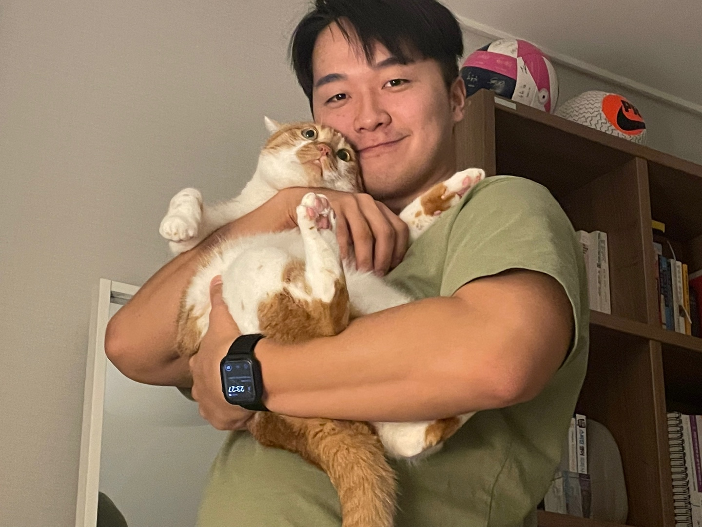

Bubblegum
An AI dating agent on Instagram
Private betaDohyeon Dodo Park
Founder Seoul
Follows your local clock. Slide to explore.
An AI dating agent on Instagram
Private betaFrom video to script and storyboard
VisitBackground tools for webtoon creators
VisitTurtle Soup AIA situation-riddle game with an AI game master.Play it ↗2023—2024
ABLUR 2.0₩20M first-month revenue · 29% trial → paid · 78% month-one repurchase. Built at Carpenstreet.2023—2024
Send2AnalyzeSend a Reel, or paste a TikTok or YouTube link.Instagram ↗2025—NOW
Signal + Santa TestAnonymous messaging app · my first website reached 1M+ users2020—2021
Issue → NotionGitHub issue to Notion backlog automation · SoloGitHub ↗2020
StarMeMobile-web self-rating social network · Team lead2021
2wszWeb VR content platform · Team lead2021
Receipt-ProjectTechnical advisor for a sculpture-major graduation projectVisit ↗2021
ThisNFTisBullshitA satirical NFT project · Team lead2022
LineByLineA web app for script memorisation · Solo2022
Cuby3D room decorating, collage diary, and AI situation-riddle products · Team lead2023
SNU Design WeekGraduation exhibition site · Development2023—2024
Signal, StarMe, VR, and the things I learned while building them.
A little more about me
02 / WORK LOG
Building Bubblegum, an AI dating agent on Instagram, and whatever needs to exist next.
Designed and launched ABLUR 2.0 from scratch; operated ABLUR 1.0 and helped the team turn creator pain into product.
Built search and recommendation systems with AI for ACON3D, a global webtoon asset store.
Built BigQuery data pipelines and analysed funnels, level design, and unit economics for Legend of Slime—1M DAU, 24M downloads, and $120M in revenue.
03 / FOOTNOTES
EDUCATION
College of Liberal Studies
Mechanical Engineering · Computer Science & Engineering
HIGH SCHOOL
26th Student President
SIDE QUESTS
Codex Hackathon, San Francisco · 2nd Place (solo participant)
SNUSV Demo Day ’26 · Summer 1st Prize
JunctionX Asia ’22 · AWS Track 3rd Prize
SK × OpenAI PrompterDay · 3rd Prize
COMMUNITY
Founded MeltingPot at SNU’s College of Liberal Studies.
04 / OFF THE CLOCK

I used to be in a university drama club. A good scene changes the air in a room.
I especially like cooking for people I love. A meal is a tiny product with immediate feedback.
Surfing, scuba, skiing (I consider snow as water)—if there’s water in it, I’m generally in.
Recently learning to be a little less impulsive. Current rating: around 1300.